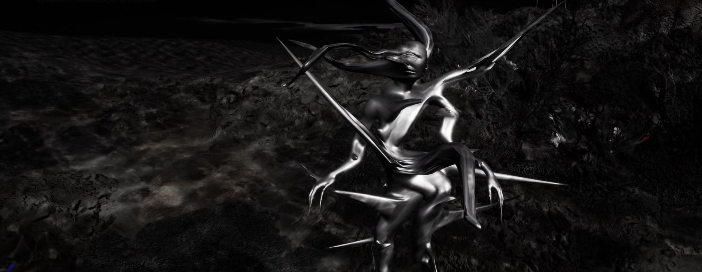
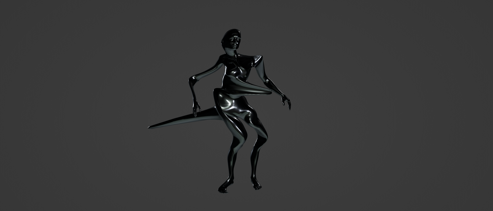
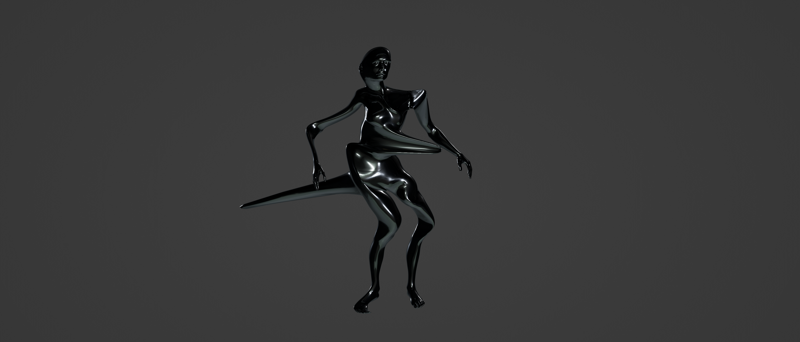
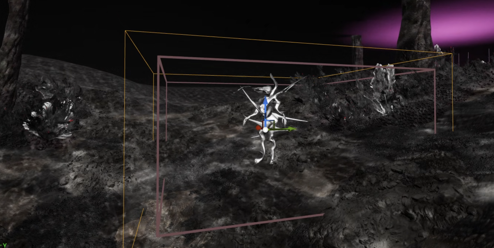
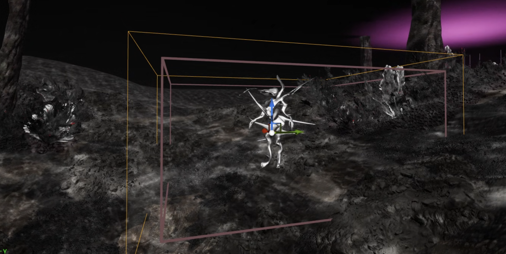
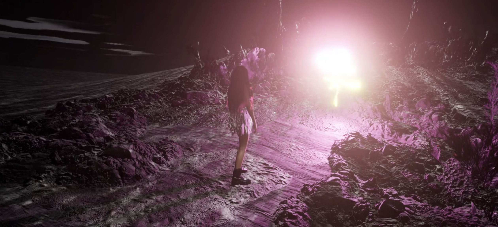
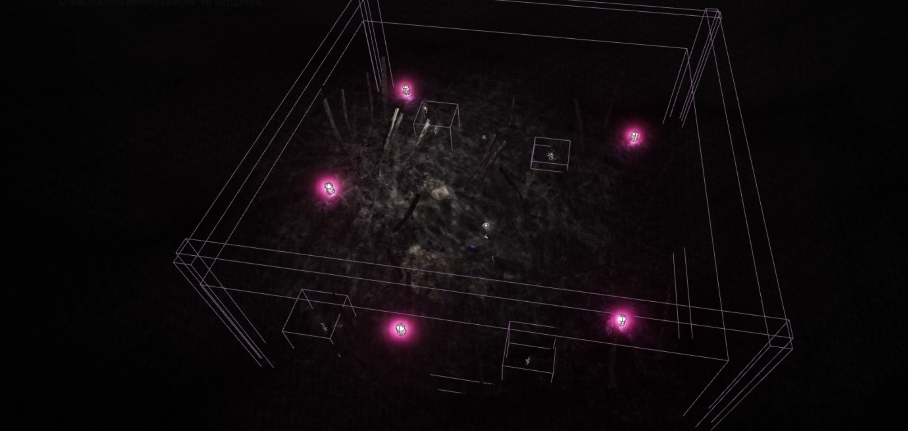
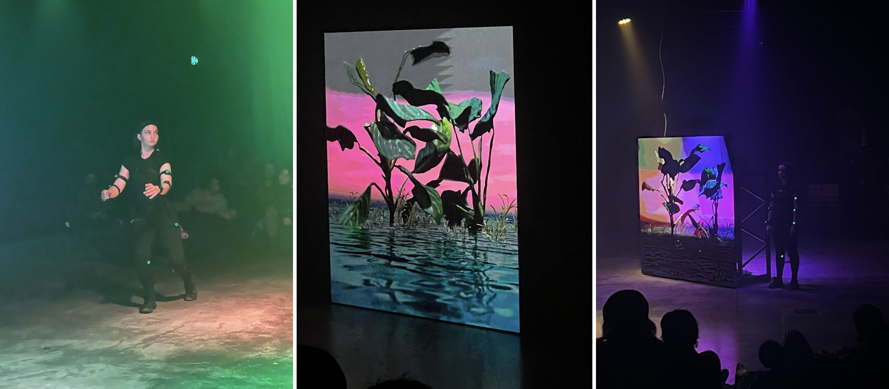
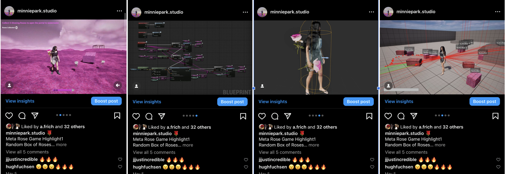
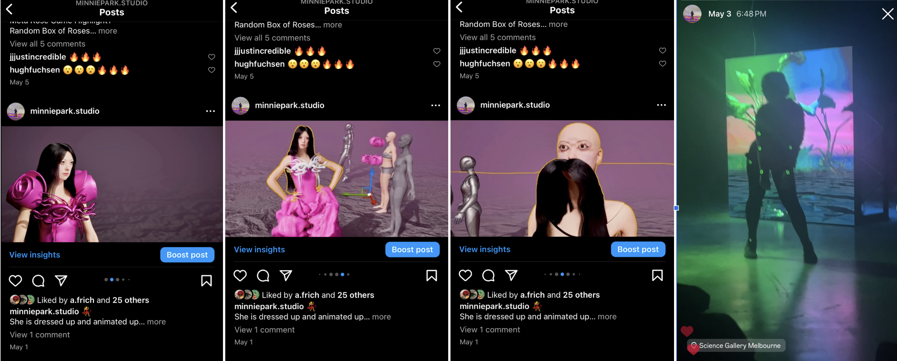

WEEK 8
2904 - 0505WORK PROGRESS
Artwork 4&5: Unreal Game + TouchDesigner

Underwater Creatures
I’ve worked on modelling creatures for the underwater environment. I was thinking about other elements to symbolise the deep, disturbing emotions in the environment for the audience to interact with, and I thought it would make sense to create creatures made by distorting and editing the body mesh of Mintie.


 

They were modelled in Blender. They are sculpted as distorted and spiky human-like creatures to represent the darkest emotions deep inside my mind.
Once they are modelled, I placed them in the environment and scripted them to damage the health of the players when they approach closely. They are interesting to see, so I assume that players will approach them closely while playing.
 
With the creatures of my mind, I sometimes find myself intentionally visiting them and getting hurt by them. I acknowledge that they live deep inside my mind and that they will not disappear easily; I just need to live with it. But I realise it’s better not to dwell too deeply where those creatures roam. It’s better not to go too deep down. Better not to approach them. I wanted the same for others. Everyone has their own creatures deep inside. We need to be really careful dealing with them. We don't want to mess with them!

With the creatures of my mind, I sometimes find myself intentionally visiting them and getting hurt by them. I acknowledge that they live deep inside my mind and that they will not disappear easily; I just need to live with it. But I realise it’s better not to dwell too deeply where those creatures roam. It’s better not to go too deep down. Better not to approach them. I wanted the same for others. Everyone has their own creatures deep inside. We need to be really careful dealing with them. We don't want to mess with them!
When the players approach the creatures closely, the player view changes to a distorted view. It is like a warning to not to get too close to them. If they step away from the creatures, the view shifts back to normal. I'll also add sound effects triggered at the same time. The sound will be designed to be uncomfortable, disturbing, sharp, and distorted.
 
I’ve also placed 5 glowing roses in the underwater environment for players to use if they want to return to the pink environment.
I’ve positioned the portal actor at the back of the PCG volume behind all the aquatic assets.

Additionally, the restart function has been added to the menu options. To restart the game, the player needs to respawn. Setting up respawning using the metahuman mesh was quite tricky, but it worked. However, when I playtested in multiplayer mode, the respawning did not function properly.
If it worked on the host server, it wouldn't work in the guest (the other players) sessions, and vice versa. It was quite challenging to get the respawning function and the restart menu button working properly. I spent several days figuring out how to make this right. Since this was one of the major functions in the game menu, I had to get it right, and I’m so glad it’s working now!


TouchDesigner Interactive Visuals
I’ve worked on the first visual for TouchDesigner. I was thinking about the flowyness of the rose petals as the main aesthetic for this one.
I’ve used the particle system in TouchDesigner, rendering a huge number of particles, so it’s quite FPS heavy.
It will then be designed to be audio and visual reactive.
INDUSTRY ENGAGEMENT
Friday Night Social: Yandell Walton Hosted by Science Gallery Melbourne
6-9pm Fri 3rd May
https://events.humanitix.com/friday-night-social-yandell-walton
This was my first visit to the Science Gallery. There was a performance using mocap, body movement tracking, and 3D visuals, possibly designed in either Unreal or Houdini. The visuals reacted to the dancer’s movements, but they were not audio-reactive.
The performance was great, but I thought they could have added a little more depth to it, such as switching the visuals, morphing them more, and making them audio-reactive as well.
But I did enjoy watching the choreography and the overall experience was good! Plus, attending these events is definitely inspiring and motivating for creating cool artworks!
SOCIAL MEDIA
 
I shared the process of setting up a random box spawning random numbers of two types of roses. The post includes screenshots of the blueprint from Unreal for picking up items from the random box and setting up the line tracing process for the character to pick up the items once they are detected by the line tracing.
Another post was on Mintie’s second dress with roses. I shared some troubleshooting I had to go through during the process of setting up the animation, dress simulations imported from CLO3D, and hair combining errors.
I also shared some stories about the science event!